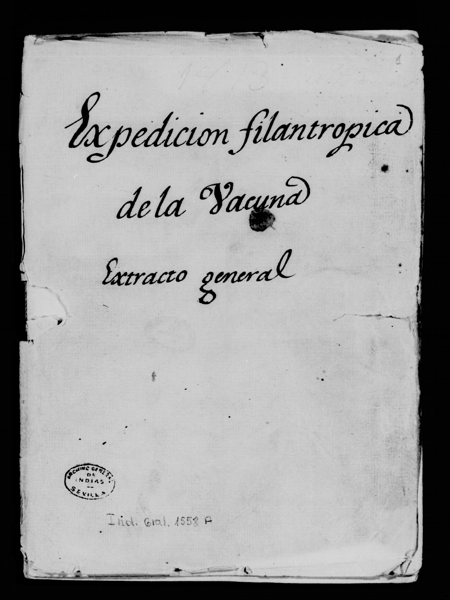

Archivo General de IndiasIndiferente 1558A
An important part of the documents I am working with can be found in the General Archive of Indies, in Sevilla, Spain. Although the physical documentation is no longer accessible to researchers, it is possible to access to the microfilmed version of them. The documents are classified under the name Indiferente 1558A.
- Extracto general del expediente de la vacuna en Ultramar
- Breve resumen del extracto del expediente general de la vacuna en Ultramar
- Expediente sobre el origen de la expedición de la vacuna
- Expedientes de los progresos de la vacuna en el virreinato del Perú
- Carta de Salvany con fecha de 16 diciembre 1807
Classification of the Indiferente 1558A
